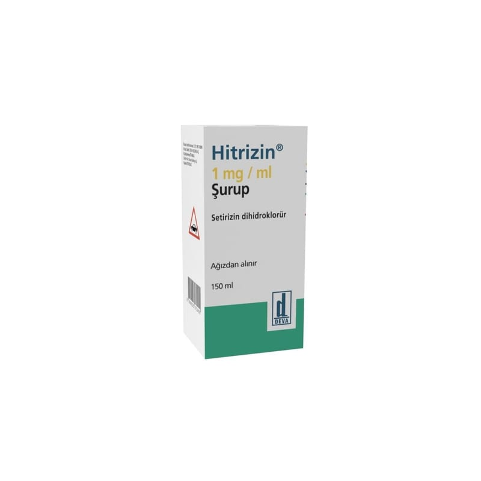

Hitrizin 1 mg/ml Şurup, 200 ml Şurup

Ne için kullanılır
KT · Bölüm 1HİTRİZİN, hemen hemen renksiz-hafif sarımsı renkli, karakteristik kokulu (frambuaz) berrak bir çözeltidir. HİTRİZİN, 2,5 ml’ye işaretli 5 ml’lik 1 kaşık ve plastik kapak ile kapatılmış amber renkli cam şişede sunulur.
HİTRİZİN, alerjik nezle ve nedeni bilinmeyen müzmin (kronik) kurdeşen tedavisinde kullanılan bir ilaçtır.
HİTRİZİN, Erişkinler ile 2 yaş ve üzeri çocuklarda; Alerjik nezlenin burun ve göz ile ilgili belirtilerinin tedavisinde ve kronik idiopatik ürtikerin (nedeni bilinmeyen müzmin kurdeşen) tedavisinde kullanılır.